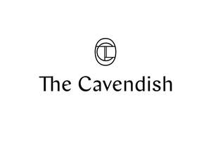

Trade Mark Journal No.2025/051 19 December 2025
UK00004275561 9 October 2025 (35,36,43)

- Class 35
- Business development services; business project management; business management of hotels; business management of residential buildings, hotels and service apartments; information services relating to business management of residential buildings and hotels; advisory and consultancy services relating to business management of residential buildings and hotels; secretarial services provided by hotels; advertising, promotional, publicity and marketing services; dissemination of publicity matter; production, preparation, presentation and distribution of advertising, promotional, publicity and marketing materials; organising promotional campaigns; business management advisory services related to franchising; provision of assistance (business) in the operation of franchises; business advice relating to franchising; the bringing together for the benefit of others, of a variety of goods, namely, paper towels, paper towels for cooks, paper tablecloths, paper cup coasters for cup, packaging materials, lids, in the form of metal lids, jar lids (bands of rubber for unscrewing -), rubber lids and caps [for industrial packaging containers], combined lids for containers [non- metallic and not for household or kitchen use], plastic lids for cans, wooden lids for industrial packaging containers, combined lids for kitchen containers, cup lids, disposable lids for household containers, glass lids for industrial packaging containers, insulated lids for plates and dishes, plastic lids for plant pots, pot lids, pouches, cups, coasters and key holders, boxes, bags, paper bags, plastic bags and garbage bags, cases, in the form of lipstick cases, medicine cases, portable, filled, door cases of metal, metal cases, cases for manicure instruments, shaving cases, razor cases, battery cases, beeper carrying cases, camera cases, carrying cases for cellular phones, carrying cases for contact lenses, carrying cases for digital music players, carrying cases for mobile computers, carrying cases for mobile phones, carrying cases for portable music players, cases adapted for binoculars, cases adapted for cameras, cases adapted for computers, cases adapted for notebook computers, cases adapted for photographic equipment, cases adapted for tablet computers, cases especially made for photographic apparatus and instruments, cases (eyeglass -), cases fitted with dissecting instruments not for medical use, cases for children's eyeglasses, cases for data storage devices, cases for digital media players, cases for diskettes, cases for electronic diaries, cases for headphones, cases for loudspeakers, cases for mp3 players, cases for pdas, cases for photographic apparatus, cases for pince-nez, cases for pocket calculators, cases for satellite navigation devices, cases for smartphones, cases for spectacles and sunglasses, leather cases for mobile phones, leather cases for smartphones, leather cases for tablet computers, lens cases, laptop cases, portable charging cases for electronic cigarettes and vaporizers, waterproof camera cases, waterproof cases for smartphones, cases for chronometric instruments, cases for clock and watch-making, cases for horological instruments, cases for jewels, cases for watches and clocks, carrying cases for musical instruments, cases for musical instruments, carrying cases made of paper, carrying cases specially adapted to hold collectable trading cards, carrying cases specially adapted to hold sports trading cards, cases for passports, cases for pens, cases for stamps [seals], cases for stationery, cases made of corrugated cardboard, check book cases, file cases, flip chart carrying cases, gift cases for writing instruments, leather pencil cases, map cases, art portfolios [cases], attache; cases, attache; cases made of imitation leather, attache; cases made of leather, beauty cases, brief cases, business card cases, calling card cases, card cases [notecases], carrying cases, cases for holding keys, cosmetic cases sold empty, credit card cases, driving licence cases, document cases, key cases, leather cases, overnight cases, tie cases, toiletry cases sold empty, travel cases, travelling cases of leather, vanity cases, not fitted, cases (non-metallic -) for bottles, packing cases made of wood, storage cases [furniture], baking cases of paper, baking cases of silicone, bread-cases [for kitchen use], chopstick cases, comb cases, fitted vanity cases, toilet cases, tooth brush cases, nightdress cases of textile, pillow cases, cases adapted to hold crochet hooks, needle cases, cases adapted for sporting articles, cases for play accessories, cases for playing cards, automatic cigarette cases, cases (cigarette -), cases for electronic cigarettes, tobacco cases, foil, paper, cardboard or plastic sheets, printed documents, printed publications, periodicals, books, booklets, magazines, newsletters, flyers, leaflets, brochures, catalogs, guidelines, photos, teaching and teaching materials except apparatus, advertisements in the form of advertisement columns of metal, columns (advertisement -) of metal, illuminated advertisements, advertisement boards of card, advertisement boards of paper, advertisement boards of cardboard, printed advertisements, advertisement columns, not of metal, advertisement boards, advertisement display boards of plastic [non- luminous], advertisement display boards of wood [non-luminous], advertisement display boards of glass [non-luminous], billboards, announcement cards, display cards, placards, printed advertising materials, stationery, writing instruments and supplies, letterhead papers, business cards, stationery files, packaging and wrapping materials, note paper, postcards, greeting cards, promotional materials in the form of printed promotional materials, calendars, posters, pictures, banners, tables, stickers, cards, notebooks, note papers, envelopes, labels, files, albums, folders, books and notebook cases, food, clothing, footwear, headgear, cosmetics, toiletries, bath preparations, body care and skin care preparations namely lotions, creams and oils, hair care preparations namely shampoos, hair conditions, travel organisers, face towels, bath towels, bathrobes, body sponges used in bath rooms, essential oils, hats, (excluding the transport thereof), enabling customers to conveniently view and purchase those goods from departmental stores, shopping centers, shopping malls, retail and wholesale outlets, hotel, food and beverage outlet, from a general merchandise catalogue by mail order or by means of telecommunications, or from a general merchandise web site in the global communication networks; administration of loyalty and incentive schemes; administration of loyalty rewards programmes; information, advisory and consultancy services relating to the aforesaid services; all of the above services also provided on-line from a computer database or the Internet.
- Class 36
- Financial services; financial trust management; financial risk management; financial investment fund services; financial asset management; advisory services relating to investment finance; acquisition for financial investment; management and valuation relating to real estate affairs; investment trust services; investment trust management; real estate brokerage; real estate and land acquisition; real estate agencies relating to the managing and arranging for ownership of real estate, condominiums, apartments; real estate agencies relating to real estate time sharing and leasing of real estate and real estate property, including condominiums and apartments; real estate investment; real estate management; leasing, rental, and management of condominiums, apartments, villas and residential homes; property investment services; financial valuation of property; financing of property development; leasing, letting and rental of property, business and shopping premises; rental of office space; rental of houses; rent collection; management of property; property portfolio management; provision of information relating to property [real estate]; real estate affairs; real estate appraisals [valuations]; advisory, information and consultancy services relating to the aforesaid services; all the above services also provided on-line from a computer database or the Internet.
- Class 43
- Accommodation bureaux (hotels, boarding houses); provision of temporary accommodation; rental of temporary accommodation; booking of temporary accommodation; temporary accommodation reservation services; restaurant, bar and catering services; banqueting services; hotel services; provision of food and drink; information services relating to provision of temporary accommodation; information services relating to hotel services; advisory and consultancy services relating to provision of temporary accommodation; advisory and consultancy services relating to hotel services; arranging, letting and rental of holiday accommodation; holiday accommodation reservations; room hire; provision of conference facilities; provision of facilities for conventions and exhibitions; information, advisory and consultancy services relating to the aforesaid services; child-care services; day care services for children; day-care centres (day-nurseries); temporary accommodation information, advice and reservation services; providing travel lodging information services and travel lodging booking agency services for travellers; consultancy provided by telephone call centers and hotlines in the field of temporary accommodation; arrangement of accommodation for travellers; resort hotel services; reception services for temporary accommodation [management of arrivals and departures]; provision of restaurant booking or reservations from customer loyalty and frequent buyer schemes; restaurant booking or reservation services provided in relation to a customer loyalty or frequent buyer scheme; temporary accommodation [hotels, motels, resorts] booking and reservation services provided in relation to a customer loyalty or frequent buyer scheme; restaurant reservation services; booking of temporary accommodation via the Internet; all of the above services also provided on-line from a computer database or the Internet.
ASCOTT INTERNATIONAL MANAGEMENT (2001) PTE LTD
Representative: Sipara Limited